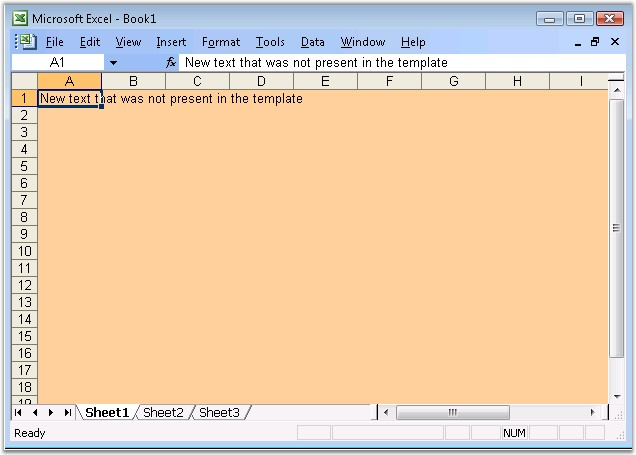

This is the most widely used functionality of XlsIO as it is the easiest and the most convenient to use. An existing spreadsheet is used as a template for generating new spreadsheets. There are several advantages of using the Template-based approach.
· The spreadsheet can be formatted by using the MS Excel GUI, and the data alone can be inserted dynamically by using XlsIO. This saves the problem of writing code for formatting by using the XlsIO API.
· There are some features like VBA Macros which cannot be created by using the XlsIO's API. Even these features can be preserved by XlsIO, when a spreadsheet is opened and saved programmatically.
· Editing an existing data in the spreadsheet is also possible by opening the template with XlsIO.
|
[C#]
// New instance of XlsIO is created.[Equivalent to launching MS Excel with no workbooks open]. // The instantiation process consists of two steps.
// Step 1: Instantiate the spreadsheet creation engine. ExcelEngine excelEngine = new ExcelEngine();
// Step 2: Instantiate the excel application object. IApplication application = excelEngine.Excel;
// Open an existing spreadsheet which will be used as a template for generating the new spreadsheet. // After opening the spreadsheet, the workbook object represents the complete in-memory object model of the template spreadsheet. IWorkbook workbook = application.Workbooks.Open("SpreadsheetFromTemplate.xls");
// The first worksheet object in the worksheets collection is accessed. IWorksheet sheet = workbook.Worksheets[0];
// Inserting some additional data. sheet.Range["A1"].Text = "New text that was not present in the template";
// Saving the workbook to disk. This spreadsheet is the result of opening and modifying // an existing spreadsheet and then saving the result to a new workbook. workbook.SaveAs("Sample.xls");
// Close the workbook. workbook.Close();
// Dispose the Excel engine excelEngine.Dispose(); |
|
[VB.NET]
' New instance of XlsIO is created.[Equivalent to launching MS Excel with no workbooks open]. ' The instantiation process consists of two steps.
' Step 1: Instantiate the spreadsheet creation engine. Dim excelEngine As ExcelEngine = New ExcelEngine()
' Step 2: Instantiate the excel application object. Dim application As IApplication = excelEngine.Excel
' Open an existing spreadsheet which, will be used as a template for generating the new spreadsheet. ' After opening the spreadsheet, the workbook object represents the complete in-memory object model of the template spreadsheet. Dim workbook As IWorkbook = application.Workbooks.Open("..\..\..\..\..\Data\SpreadsheetFromTemplate.xls")
' The first worksheet object in the worksheets collection is accessed. Dim sheet As IWorksheet = workbook.Worksheets(0)
' Inserting some additional data. sheet.Range("A1").Text = "New text that was not present in the template"
' Saving the workbook to disk. This spreadsheet is the result of opening and modifying ' an existing spreadsheet and then saving the result to a new workbook. workbook.SaveAs("Sample.xls")
' Closing the workbook. workbook.Close()
' Dispose the Excel engine excelEngine.Dispose() |

Figure 32: XlsIO with Spreadsheet from Template
XlsIO enables to open a spreadsheet in Read-Only mode, even if the spreadsheet is already open in your machine. The following code example illustrates how to do
this.
|
[C#]
// New instance of XlsIO is created.[Equivalent to launching MS Excel with no workbooks open]. // The instantiation process consists of two steps.
// Step 1: Instantiate the spreadsheet creation engine. ExcelEngine excelEngine = new ExcelEngine();
// Step 2: Instantiate the Excel application object. IApplication application = excelEngine.Excel;
// Open an existing spreadsheet which will be used as a template for generating the new spreadsheet. // After opening the spreadsheet, the workbook object represents the complete in-memory object model of the template spreadsheet. IWorkbook workbook = application.Workbooks.OpenReadOnly("SpreadsheetFromTemplate.xls"); |
|
[VB.NET]
' New instance of XlsIO is created.[Equivalent to launching MS Excel with no workbooks open]. ' The instantiation process consists of two steps.
' Step 1: Instantiate the spreadsheet creation engine. Dim excelEngine As ExcelEngine = New ExcelEngine()
' Step 2: Instantiate the Excel application object. Dim application As IApplication = excelEngine.Excel
' Open an existing spreadsheet which will be used as a template for generating the new spreadsheet. ' After opening the spreadsheet, the workbook object represents the complete in-memory object model of the template spreadsheet. Dim workbook As IWorkbook = application.Workbooks.OpenReadOnly("SpreadsheetFromTemplate.xls") |